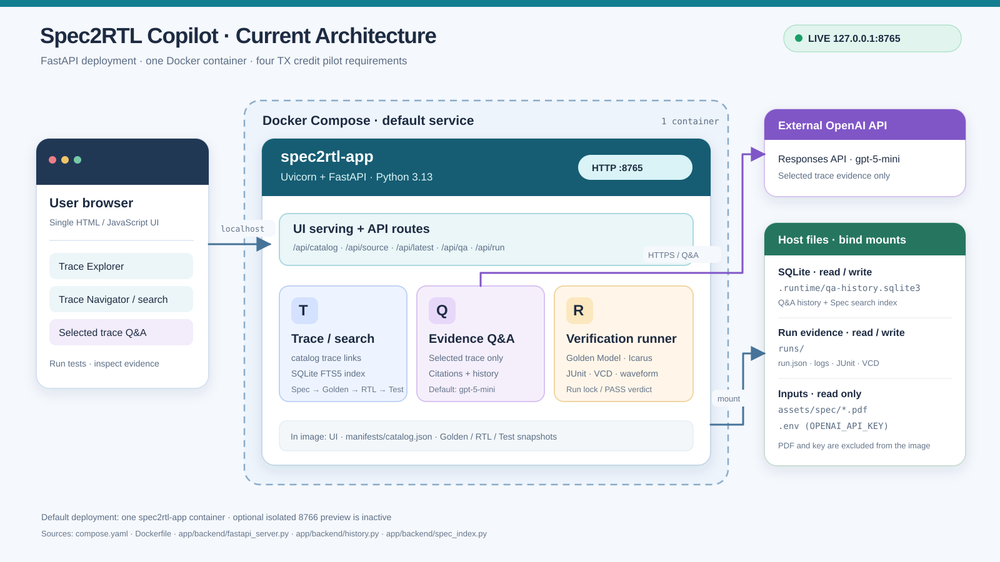

ECSS SpaceWire Encoding/Data Link 요구사항에서 Golden Model, RTL, Test 및 실행 증거까지 연결하는 trace 기반 분석·Q&A MVP
| 프로젝트 | Spec2RTL Copilot |
| 검증 범위 | ECSS-E-ST-50-12C Rev.1 · Encoding/Data Link 핵심 Requirement 18개 |
| 기술 스택 | FastAPI · SQLite FTS5 · Docker Compose · OpenAI API · Icarus Verilog |
| 보고 기준일 | 2026-09-28 |
본 보고서는 동작하는 MVP와 최종 시연 리허설 결과를 기준으로 작성했다.
이 프로젝트는 규격 문장, 참조 모델, RTL 구현, 검증 테스트와 실행 결과를 하나의 trace로 연결하고, 선택된 근거 범위 안에서 LLM이 기술 질문에 답하는 흐름을 구현한 MVP다.
| 18Executable Requirements | 22/22Golden + RTL Checks PASS | 4/4실제 OpenAI Q&A 성공 | 18/18Trace Cards Linked |
| Requirement | 검증 동작 | 대표 판정 |
|---|---|---|
| REQ-FC-E1 | FCT 수신 시 transmit credit 증가 | tx_credit += 8 |
| REQ-FC-E2 | N-Char 전송 시 transmit credit 감소 | tx_credit -= 1 |
| REQ-FC-F | credit=0일 때 N-Char 전송 차단 | send_nchar=0 |
| REQ-FC-HJ | 최대값 56과 추가 FCT overflow 처리 | error 발생, credit=56 유지 |
| REQ-ENC-SYMBOL | Data/Control symbol 직렬화와 복원 | 5종 roundtrip, parity 정상 |
| REQ-ENC-DS-CORE | Data-Strobe core와 초기값 | D/S transition, 초기 00 |
| REQ-ENC-FIRST-NULL | 첫 Null parity와 최초 Strobe transition | 첫 D/S 상태 01 |
| REQ-ENC-NULL-DETECT | 9-bit Null 검출과 gotNull lifetime | 011101000, hold, RX-disable clear |
| REQ-ENC-PARITY-GATE | gotNull 이후 parity error enable | raw/valid error gate |
| REQ-ENC-DISCONNECT | 첫 edge 이후 disconnect 검출 | 850 ns idle에서 검출 |
| REQ-ENC-ESC | 금지된 ESC 후속 문자 검출 | ESC/EOP/EEP 오류와 gate |

현재 배포 구조: 브라우저, 단일 FastAPI 컨테이너, 호스트 저장소와 외부 OpenAI API
| 계층 | 현재 구성 | 역할 |
|---|---|---|
| UI | HTML / JavaScript | Trace Navigator, Spec·Golden·RTL·Test·Wave 연계 표시 |
| API | FastAPI / Uvicorn | 카탈로그, 소스, 검색, Q&A, 실행 및 artifact API |
| 데이터 | SQLite FTS5 | Q&A 이력과 18개 Spec 카드 검색 색인 |
| 검증 | Python Golden Model / Icarus Verilog | Golden regression, RTL compile/simulation, JUnit·VCD 생성 |
| 배포 | Docker Compose | FastAPI·UI·runner를 단일 컨테이너로 재현 |
| LLM | OpenAI Responses API · gpt-5-mini | 선택된 trace 근거 기반 설명과 인용 |
.env는 읽기 전용 mount이며 이미지에 포함하지 않는다. OpenAI에는 선택 Requirement의 제한된 발췌만 전달하고 전체 PDF·VCD와 API 키는 전달하지 않는다.| ① 선택 | Trace Navigator에서 Requirement를 선택한다. |
| ② 추적 | Spec clause와 PDF 페이지, Golden·RTL·Test 소스 위치가 함께 갱신된다. |
| ③ 실행 | Golden regression → RTL compile → RTL simulation을 순서대로 수행한다. |
| ④ 증거 | JUnit, stdout, VCD와 requirement별 waveform을 immutable run 디렉터리에 저장한다. |
| ⑤ 설명 | LLM은 선택 trace의 허용된 근거를 바탕으로 답하고 출처를 표시한다. |
| ⑥ 보존 | 답변과 출처, 모델, 연결 run ID를 SQLite에 저장해 재호출 없이 다시 연다. |
| 검증 항목 | 결과 | 확인 내용 |
|---|---|---|
| Docker 서비스 | 정상 | 127.0.0.1:8765, health OK |
| Golden + RTL 실행 | PASS | 22 checks, failures 0, errors 0 |
| Waveform | 정상 | VCD 및 waveform JSON 생성 |
| 실제 Q&A | 4/4 성공 | 각 Requirement 답변이 SQLite에 저장·재조회됨 |
| Trace 연결 | 18/18 구성 | Spec, Golden, RTL, Test, JUnit/VCD 연결 |
| 확장 검증 | 성공 | 22/22 PASS, 전체 host 계약 테스트 통과 |
| 0:00–1:10 | Requirement에서 구현까지REQ-FC-F를 선택하고 Spec p.74, EMPTY behavior, Golden·RTL 강조 위치와 trace ID를 설명한다. |
| 1:10–2:40 | 독립 검증 증거 Run Golden + RTL Test를 실행하고 22/22 PASS, 단계별 로그, waveform, JUnit/VCD를 보여준다. |
| 2:40–4:00 | 근거 기반 Q&A “credit이 0인데 N-Char가 대기 중이면 어떻게 되는가?”를 질문하고 답변의 Spec·소스·Test·run 출처를 확인한다. Previous questions에서 저장 이력을 다시 연다. |
| 4:00–5:00 | 기술 스택과 범위 구조도에서 FastAPI, SQLite, Docker, OpenAI API의 역할을 짚고 ECSS 5.5 11개와 5.4 실행 카드 7개를 설명한다. |
docker compose ps에서 spec2rtl-app이 healthy인지 확인한다./api/health, ECSS PDF, 기존 PASS run과 저장 Q&A를 확인한다.spw_top에는 아직 인스턴스되지 않았다.| 단계 | 총 카드 | 판단 근거 |
|---|---|---|
| 현재 | 18 | 5.5 Data Link 11개 + 5.4 Encoding 7개, 22/22 실행 판정 |
| 제품 RTL 통합 | 18 유지 | compliance guard를 imported top-level의 RX Enable·raw parity 경계에 연결 |
| 5.6 일부 확장 | 20~22 | 보유 RTL 기준 Packet, EOP/EEP, Time-code만 선택 편입 |
5.3 전기 특성, 5.6 distributed interrupt·routing, 5.7 전체 MIB는 현재 RTL과 검증 환경으로 직접 판정할 수 없어 목표 수치에서 제외했다.
| 우선순위 | 확장 항목 | 전환 조건 |
|---|---|---|
| 1 | simulation worker + job queue 분리 | 동시 실행 또는 장시간 regression 필요 |
| 2 | SQLite → PostgreSQL | 다중 사용자·동시 쓰기·대규모 trace 관리 |
| 3 | artifact object storage와 검색 계층 | VCD·로그·문서 규모 증가 및 장기 보존 |
부트캠프 발표에서는 기능 수보다 다음 세 가지를 중심으로 설명한다.